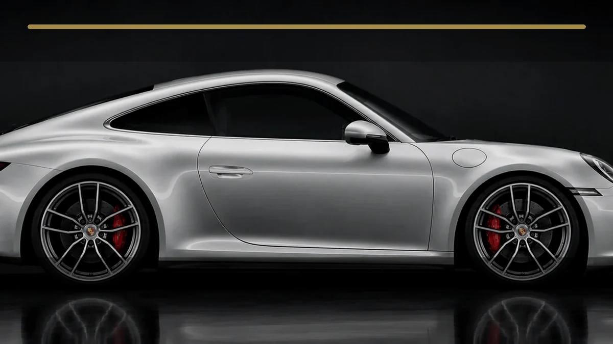
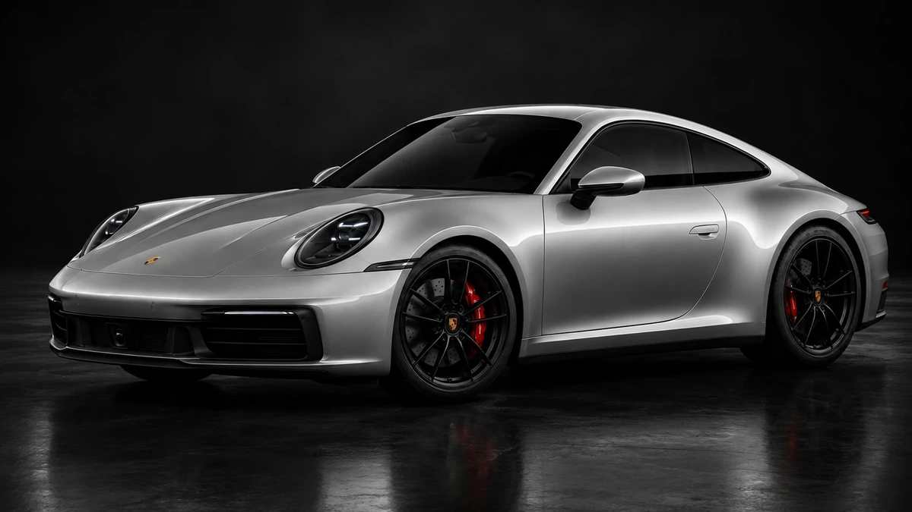
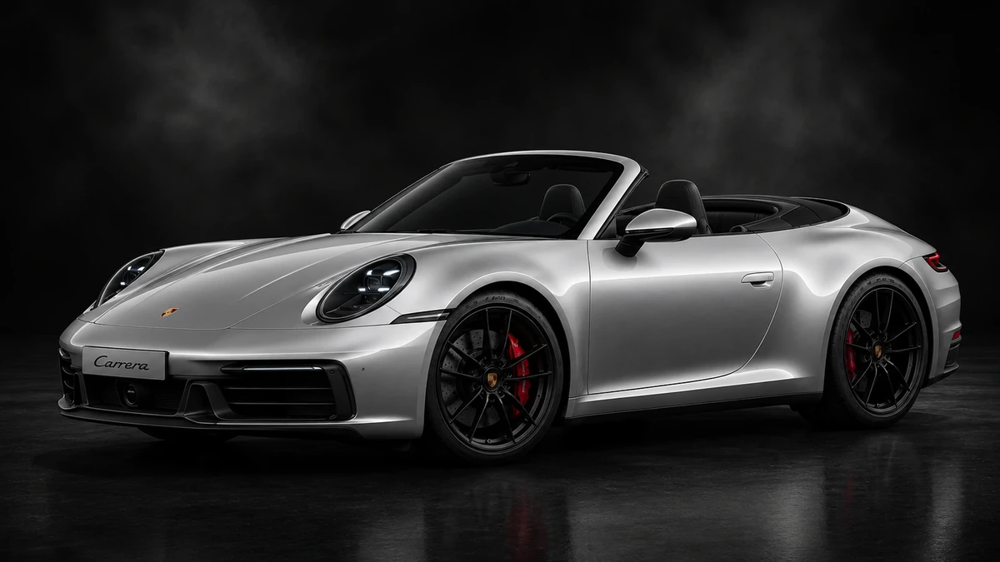
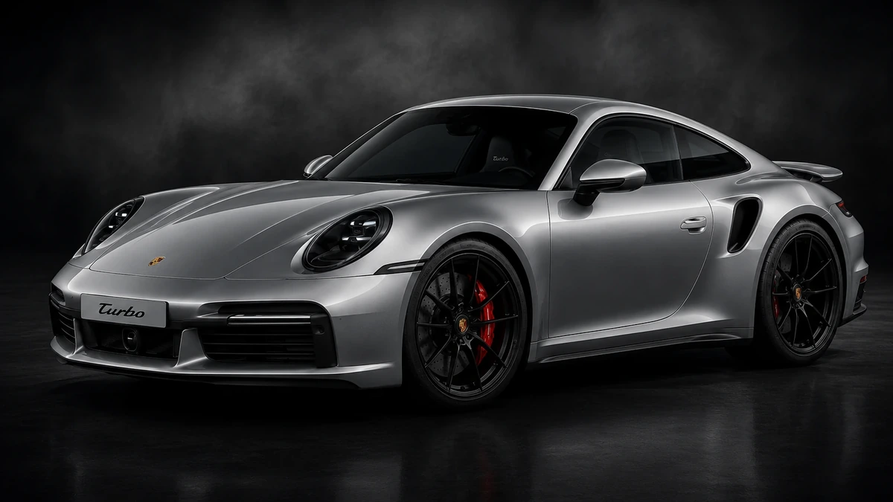
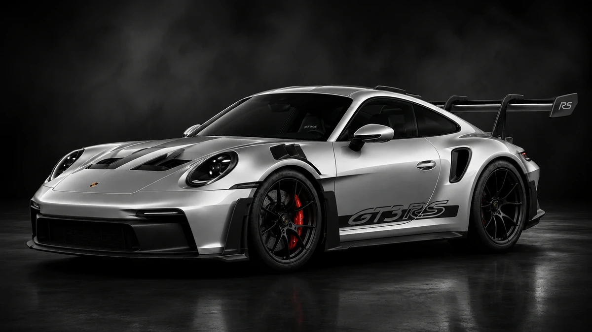

Carrera
Der Carrera steht für den klassischen 911: sportlich, relativ vielseitig und nah an der ursprünglichen Idee eines schnellen, aber nutzbaren Sportwagens.

Porsche Experience
Modelle & Varianten
Der Bereich Modelle zeigt nicht die gesamte Geschichte des 911, sondern die wichtigsten aktuellen 911-Charaktere in einer verständlichen Übersicht. So wird klar, warum ein Carrera, ein Targa, ein Turbo und ein GT-Modell zwar alle zur 911-Familie gehören, aber unterschiedliche Aufgaben erfüllen.
Die Grundidee bleibt immer gleich: flache Silhouette, starke Heckpartie, sportliche Sitzposition und ein Boxer-Motor im Heckbereich. Die Varianten unterscheiden sich vor allem bei Leistung, Alltagstauglichkeit, Offenfahren, Luxus und Motorsportnähe.
Einordnung
Der 911 ist keine einzelne starre Version, sondern eine Modellfamilie. Die Varianten bauen auf derselben Grundidee auf, setzen aber unterschiedliche Schwerpunkte: Alltag, Offenfahren, maximale Leistung oder Rennstrecken-Nähe.
Der Carrera steht für den klassischen 911: sportlich, relativ vielseitig und nah an der ursprünglichen Idee eines schnellen, aber nutzbaren Sportwagens.
Der Targa verbindet Coupé-Gefühl mit offenem Fahren. Auffällig ist der charakteristische Targa-Bügel, der ihn optisch sofort von anderen Varianten abhebt.
Turbo-Modelle stehen für sehr hohe Leistung mit Komfort. GT-Modelle wirken kompromissloser und sind stärker an Motorsport und Rennstrecke orientiert.
Auswahl
Klicke auf eine Karte, um die jeweilige Variante im großen Bildbereich zu sehen. Die Einordnung ist bewusst kurz gehalten, damit der Unterschied zwischen den Varianten schnell verständlich wird.
Galerie
Die Galerie zeigt die ausgewählten 992-Varianten als visuelle Übersicht. Dadurch wirkt der Modelle-Bereich klarer und passt besser zum Namen der Seite.
Front- und Rückansicht
Front- und Rückansicht
Front- und Rückansicht
Front- und Rückansicht
Front- und Rückansicht
Front- und Rückansicht
Front- und Rückansicht
Front- und Rückansicht
911 Match
Der Vergleich bewertet keine Kaufentscheidung, sondern zeigt verständlich, wie sich Charakter, Dachkonzept und Einsatzzweck unterscheiden.

Vergleich
Diese Übersicht hilft, die Varianten nicht nur optisch, sondern auch inhaltlich zu unterscheiden. Sie ist für ein Schulprojekt bewusst verständlich formuliert.
Orientierung

Carrera-Modelle zeigen die Grundidee des 911 am ausgewogensten und verbinden Sport mit Alltag.

Cabriolet und Targa stellen Atmosphäre, Dachkonzept und emotionale Nutzung stärker in den Mittelpunkt.

Turbo-Modelle kombinieren sehr hohe Leistungsreserven mit Komfort und technischer Sicherheit.

GT3 und GT3 RS richten ihre Abstimmung konsequenter auf Rückmeldung, Aerodynamik und Rennstrecke aus.
Fazit
Vorher wurden Modellvarianten und historische Generationen vermischt. Jetzt hat jede Seite eine klare Aufgabe: Modelle erklärt die Varianten des 911, während Geschichte die Entwicklung über die Generationen zeigt.
Besucher verstehen schneller, was die einzelnen 911-Versionen unterscheidet. Dadurch wirkt die Seite professioneller, logischer und leichter bedienbar.
Die Inhalte sind sauber getrennt, verständlich formuliert und fachlich besser einzuordnen. Das verbessert sowohl Struktur als auch inhaltliche Qualität.
Modellarchitektur
Die Modellnamen sind kein zufälliges Sortiment. Sie bilden unterschiedliche Nutzungsprofile ab und helfen Besuchern, technische Unterschiede in eine verständliche Rolle zu übersetzen.
Der klassische Allrounder verbindet Alltag, Langstrecke und sportliches Fahren. Er bildet die verständliche Basis der Modellfamilie.
Der markante Überrollbügel und das besondere Dachkonzept verbinden Offenfahren mit einer eigenständigen visuellen Identität.
Allradantrieb, hohe Leistungsreserven und aktive Systeme stehen für kontrollierte Geschwindigkeit und starke Alltagstauglichkeit.
Gewicht, Aerodynamik, Fahrwerk und Rückmeldung werden stärker auf präzises Fahren und den Einsatz auf der Rundstrecke ausgerichtet.